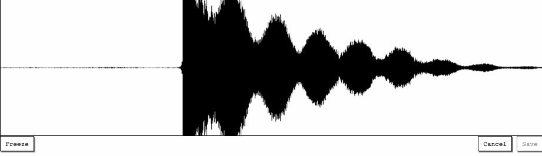
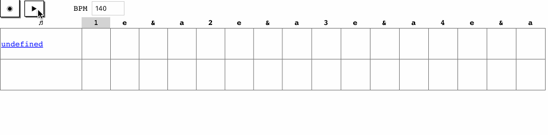
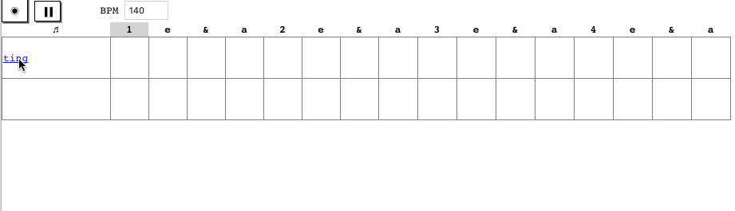

← Home
Boomclap is a sampler and sequencer built using the Web Audio API. It’s very crude. The next beat is scheduled with setTimeout, and the Web Audio API Node graph is built on every beat. It’s a fun toy to play around with.
 The window shows the last few seconds of microphone audio. Freeze the window, crop the sample, and save it to the sequencer.
 The sequencing grid has a row for each sample, and a column for each 16th beat in one bar. Clicking a cell plays the corresponding sample on that beat.
 Clicking a sample, opens the editor interface. Slide to configure pitch, gain, and filter cut off. Each change re-plays the sample. Optionally, delete, play, or duplicate the sample.